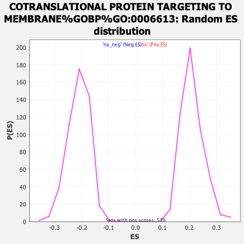

| | | Dataset | tel_exp_collapsed |
| Phenotype | NoPhenotypeAvailable |
| Upregulated in class | na_pos |
| GeneSet | COTRANSLATIONAL PROTEIN TARGETING TO MEMBRANE%GOBP%GO:0006613 |
| Enrichment Score (ES) | 0.72835714 |
| Normalized Enrichment Score (NES) | 3.485679 |
| Nominal p-value | 0.0 |
| FDR q-value | 0.0 |
| FWER p-Value | 0.0 |
Table: GSEA Results Summary
 Fig 1: Enrichment plot: COTRANSLATIONAL PROTEIN TARGETING TO MEMBRANE%GOBP%GO:0006613
Fig 1: Enrichment plot: COTRANSLATIONAL PROTEIN TARGETING TO MEMBRANE%GOBP%GO:0006613
Profile of the Running ES Score & Positions of GeneSet Members on the Rank Ordered List
| PROBE | GENE SYMBOL | GENE_TITLE | RANK IN GENE LIST | RANK METRIC SCORE | RUNNING ES | CORE ENRICHMENT | | 1 | RPL41 | | | 135 | 15.363 | 0.0080 | Yes |
| 2 | RPS27A | | | 257 | 13.814 | 0.0153 | Yes |
| 3 | RPLP1 | | | 262 | 13.755 | 0.0304 | Yes |
| 4 | RPS27 | | | 279 | 13.630 | 0.0445 | Yes |
| 5 | RPL17 | | | 282 | 13.597 | 0.0596 | Yes |
| 6 | RPL30 | | | 344 | 13.203 | 0.0702 | Yes |
| 7 | RPL18A | | | 360 | 13.065 | 0.0838 | Yes |
| 8 | RPL19 | | | 381 | 12.937 | 0.0969 | Yes |
| 9 | RPL9 | | | 413 | 12.789 | 0.1090 | Yes |
| 10 | RPS4X | | | 446 | 12.619 | 0.1210 | Yes |
| 11 | UBA52 | | | 463 | 12.539 | 0.1339 | Yes |
| 12 | RPL4 | | | 464 | 12.530 | 0.1479 | Yes |
| 13 | RPL11 | | | 468 | 12.492 | 0.1616 | Yes |
| 14 | RPL24 | | | 478 | 12.446 | 0.1749 | Yes |
| 15 | RPS12 | | | 498 | 12.370 | 0.1874 | Yes |
| 16 | RPS2 | | | 508 | 12.280 | 0.2005 | Yes |
| 17 | RPS28 | | | 535 | 12.157 | 0.2124 | Yes |
| 18 | RPL28 | | | 539 | 12.124 | 0.2257 | Yes |
| 19 | RPL7 | | | 555 | 12.067 | 0.2381 | Yes |
| 20 | RPS29 | | | 556 | 12.062 | 0.2516 | Yes |
| 21 | RPL18 | | | 589 | 11.927 | 0.2628 | Yes |
| 22 | RPL14 | | | 601 | 11.853 | 0.2753 | Yes |
| 23 | RPS11 | | | 615 | 11.803 | 0.2876 | Yes |
| 24 | RPS17 | | | 658 | 11.656 | 0.2977 | Yes |
| 25 | RPLP2 | | | 664 | 11.604 | 0.3104 | Yes |
| 26 | RPL38 | | | 697 | 11.483 | 0.3210 | Yes |
| 27 | RPL8 | | | 725 | 11.394 | 0.3319 | Yes |
| 28 | RPS19 | | | 752 | 11.246 | 0.3427 | Yes |
| 29 | RPS13 | | | 772 | 11.196 | 0.3539 | Yes |
| 30 | RPS6 | | | 778 | 11.182 | 0.3661 | Yes |
| 31 | RPLP0 | | | 785 | 11.156 | 0.3781 | Yes |
| 32 | RPL37A | | | 790 | 11.122 | 0.3903 | Yes |
| 33 | RPS24 | | | 799 | 11.075 | 0.4021 | Yes |
| 34 | RPL23 | | | 806 | 11.050 | 0.4140 | Yes |
| 35 | RPL3 | | | 816 | 11.029 | 0.4257 | Yes |
| 36 | RPL5 | | | 837 | 10.953 | 0.4366 | Yes |
| 37 | RPL36 | | | 839 | 10.952 | 0.4488 | Yes |
| 38 | RPL34 | | | 855 | 10.914 | 0.4600 | Yes |
| 39 | RPL10A | | | 862 | 10.876 | 0.4717 | Yes |
| 40 | RPL12 | | | 885 | 10.818 | 0.4823 | Yes |
| 41 | RPL10 | | | 907 | 10.770 | 0.4929 | Yes |
| 42 | RPL13 | | | 914 | 10.753 | 0.5045 | Yes |
| 43 | RPS23 | | | 917 | 10.751 | 0.5164 | Yes |
| 44 | RPL21 | | | 919 | 10.740 | 0.5283 | Yes |
| 45 | RPS8 | | | 956 | 10.634 | 0.5377 | Yes |
| 46 | RPL39 | | | 972 | 10.589 | 0.5485 | Yes |
| 47 | RPS20 | | | 980 | 10.578 | 0.5599 | Yes |
| 48 | RPL32 | | | 986 | 10.572 | 0.5713 | Yes |
| 49 | RPL22 | | | 1008 | 10.526 | 0.5817 | Yes |
| 50 | SRP14 | | | 1079 | 10.378 | 0.5885 | Yes |
| 51 | RPL15 | | | 1092 | 10.346 | 0.5993 | Yes |
| 52 | RPS26 | | | 1095 | 10.336 | 0.6107 | Yes |
| 53 | RPS15A | | | 1105 | 10.318 | 0.6216 | Yes |
| 54 | RPL37 | | | 1136 | 10.246 | 0.6310 | Yes |
| 55 | RPS14 | | | 1176 | 10.144 | 0.6397 | Yes |
| 56 | RPL27A | | | 1203 | 10.067 | 0.6492 | Yes |
| 57 | RPL23A | | | 1294 | 9.851 | 0.6541 | Yes |
| 58 | RPL35A | | | 1297 | 9.839 | 0.6650 | Yes |
| 59 | RPL26 | | | 1463 | 9.446 | 0.6644 | Yes |
| 60 | RPS7 | | | 1473 | 9.429 | 0.6743 | Yes |
| 61 | SEC63 | | | 1556 | 9.227 | 0.6790 | Yes |
| 62 | RPS21 | | | 1564 | 9.212 | 0.6889 | Yes |
| 63 | RPS10 | | | 1598 | 9.136 | 0.6968 | Yes |
| 64 | RPL27 | | | 1612 | 9.106 | 0.7061 | Yes |
| 65 | RPL7A | | | 1809 | 8.761 | 0.7027 | Yes |
| 66 | RPL29 | | | 1825 | 8.729 | 0.7114 | Yes |
| 67 | RPS15 | | | 1829 | 8.721 | 0.7209 | Yes |
| 68 | RPS3 | | | 1986 | 8.477 | 0.7199 | Yes |
| 69 | RPL36A | | | 2001 | 8.456 | 0.7284 | Yes |
| 70 | RPS5 | | | 2414 | 7.789 | 0.7092 | No |
| 71 | SRP72 | | | 2430 | 7.774 | 0.7169 | No |
| 72 | RPS25 | | | 2512 | 7.671 | 0.7200 | No |
| 73 | RPS3A | | | 2580 | 7.565 | 0.7239 | No |
| 74 | RPL31 | | | 3025 | 6.924 | 0.7017 | No |
| 75 | SEC61B | | | 3114 | 6.780 | 0.7033 | No |
| 76 | RPS16 | | | 3166 | 6.704 | 0.7073 | No |
| 77 | RPL35 | | | 3266 | 6.533 | 0.7080 | No |
| 78 | TRAM1 | | | 3820 | 5.705 | 0.6770 | No |
| 79 | SEC61A1 | | | 5299 | 3.090 | 0.5806 | No |
| 80 | ZFAND2B | | | 5304 | 3.084 | 0.5838 | No |
| 81 | SRP9 | | | 5579 | 2.586 | 0.5682 | No |
| 82 | SRP68 | | | 5834 | 2.111 | 0.5534 | No |
| 83 | SRP54 | | | 5901 | 1.990 | 0.5512 | No |
| 84 | RPSA | | | 6548 | 0.942 | 0.5086 | No |
| 85 | SEC61A2 | | | 6653 | 0.789 | 0.5025 | No |
| 86 | SRP19 | | | 9170 | -2.408 | 0.3353 | No |
| 87 | SSR1 | | | 11077 | -5.766 | 0.2130 | No |
| 88 | SEC62 | | | 11805 | -7.069 | 0.1718 | No |
| 89 | RPL13A | | | 12567 | -8.301 | 0.1297 | No |
| 90 | SSR2 | | | 13987 | -10.931 | 0.0461 | No |
| 91 | ARL6IP1 | | | 14798 | -13.896 | 0.0070 | No |
Table: GSEA details [plain text format]

Fig 2: COTRANSLATIONAL PROTEIN TARGETING TO MEMBRANE%GOBP%GO:0006613: Random ES distribution
Gene set null distribution of ES for COTRANSLATIONAL PROTEIN TARGETING TO MEMBRANE%GOBP%GO:0006613